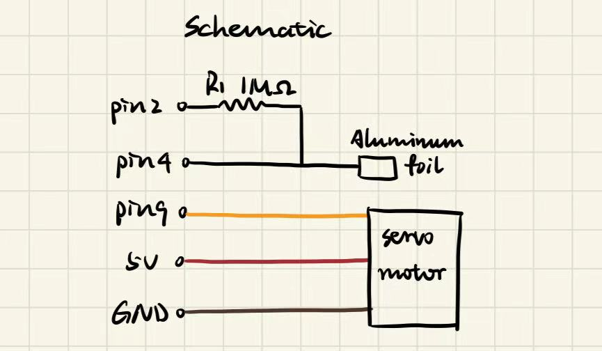
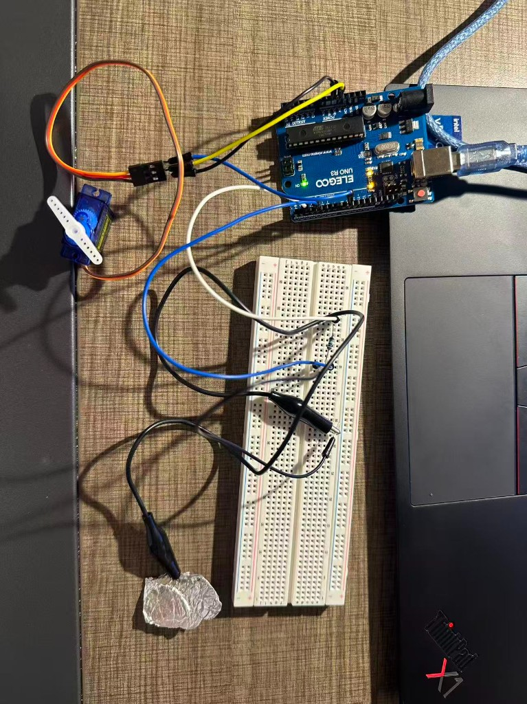
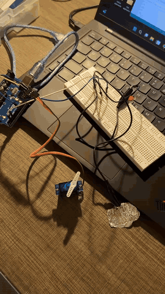
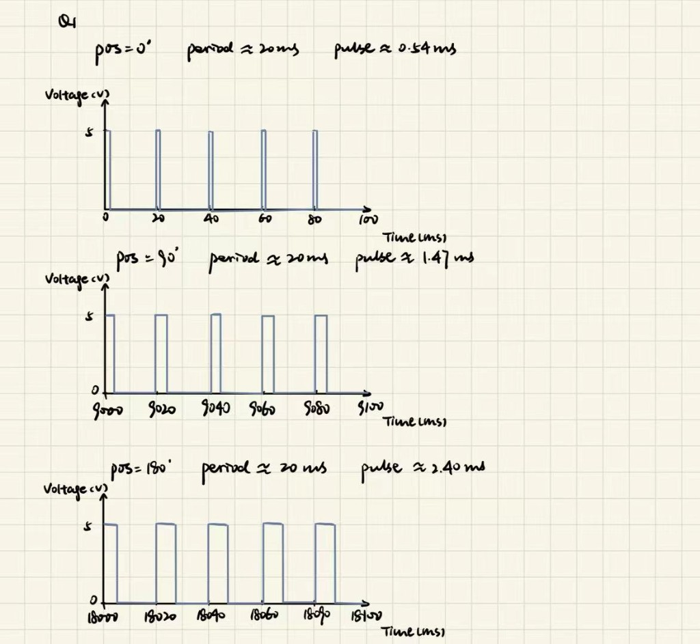

I made a touch-controlled servo using aluminum foil as the input. When I touch the foil, the servo moves to 150°. When I lift my finger, it returns to 0°. I used the CapacitiveSensor library to read the touch pad and the Servo library to control the motor.

The resistor slows charging so a change in capacitance produces a larger timing difference. I used 1 MΩ, which gave me clearly different readings when the foil was touched and untouched.

The program uses two libraries: CapacitiveSensor to time the foil pad, and Servo to move the motor. It does not use analogRead(), so the assignment’s analog-input calibration step does not apply here. The readings are timing counts from the library, not volts or a 0–1023 ADC range.
You can also download the same commented file: HCDE439_A4.ino
// Load the library that reads the capacitive touch pad.
#include <CapacitiveSensor.h>
// Load the library that controls the servo.
#include <Servo.h>
// Use D2 as the send pin and D4 as the receive pin.
CapacitiveSensor touchPad(2, 4);
// Create an object to control the servo arm.
Servo arm;
// Use 30 samples per reading, following the class demo.
const int sampleCount = 30;
// Separate untouched readings around 100 from touched readings around 5500.
const long touchThreshold = 1000;
// Use 0 degrees for the startup and released positions.
const int releasedAngle = 0;
// Move to 150 degrees when the foil is touched.
const int touchedAngle = 150;
// Set up the sensor and return the servo to its starting position.
void setup() {
// Disable periodic baseline recalibration during the demo.
touchPad.set_CS_AutocaL_Millis(0xFFFFFFFF);
// Send the servo control signal on D9.
arm.attach(9);
// Command the servo to move to its starting position.
arm.write(releasedAngle);
// Give the servo one second to move before reading the sensor.
delay(1000);
// Start Serial Monitor output at 9600 baud.
Serial.begin(9600);
}
// Read the touch pad and update the servo position repeatedly.
void loop() {
// Measure the touch pad using the selected sample count.
long reading = touchPad.capacitiveSensor(sampleCount);
// Print the reading so I can check the threshold.
Serial.println(reading);
// Leave the servo in place if the library reports a negative error value.
if (reading >= 0) {
// Check whether the reading is high enough to count as a touch.
if (reading >= touchThreshold) {
// Move the servo to the touched position.
arm.write(touchedAngle);
}
// Use the released position when the reading is below the threshold.
else {
// Return the servo to its starting position.
arm.write(releasedAngle);
}
}
// Pause briefly before starting the next measurement.
delay(20);
}My readings were around 100 without touch and around 5500 when I held my finger on the foil. I chose 1000 as the threshold because it was well above the untouched reading and below the touched reading.
I kept the class example’s 30 samples per reading. I used 0° as the resting position and 150° as the touched position so the movement would be easy to see. The one-second startup pause gives the servo time to reach its starting position before touch detection begins.
The 20 ms delay adds a short pause between measurements. Serial output uses 9600 baud, matching the Serial Monitor. I disabled periodic automatic baseline recalibration following the class example.
If capacitiveSensor() returns a negative error value, the code skips arm.write() and keeps the previous servo position.

This question is about the assignment’s sweep sketch with delay(100), not my touch-controlled firmware.

The Servo library keeps sending pulses during delay(100). The pulses repeat about every 20 ms, so there are about five pulses before the program increases the angle by 1°. The voltage switches between approximately 0 V and 5 V, and the HIGH part gets longer as the commanded angle increases.
My graph shows three time windows from the sweep. With the library’s default settings, the pulse width is about 0.54 ms at 0°, 1.47 ms at 90°, and 2.40 ms at 180°. After the 180° step, the next loop starts at 0° again. Pulse widths are drawn approximately to show the difference.
These values come from the default Arduino Servo library timing, not from an oscilloscope measurement. Servo.h source
I would take three readings and use the middle value after sorting them. For example, if the readings are 100, 980, and 102, the result is 102. This helps remove an occasional outlier when the actual input changes little during those readings. Two incorrect readings in the same group could still affect the result.
function setup():
initializeSensor()
function readReliableValue():
readings = [readSensor(), readSensor(), readSensor()]
sort readings from smallest to largest
return readings[1] // Middle value using zero-based indexing
function loop():
value = readReliableValue()
useReading(value)I would take ten readings and average them. If the noise is equally likely to be above or below the true value and varies independently between readings, the differences partly cancel out. This makes the result less jumpy, although it also makes the response to changes slower.
function setup():
initializeSensor()
function readSmoothedValue():
total = 0
repeat 10 times:
total = total + readSensor()
return total / 10.0
function loop():
value = readSmoothedValue()
useReading(value)I used ChatGPT to help revise and debug the Arduino code. It also helped me understand the servo waveform and the approaches to the sensor questions. I used Cursor to help me revise the code for the portfolio page.